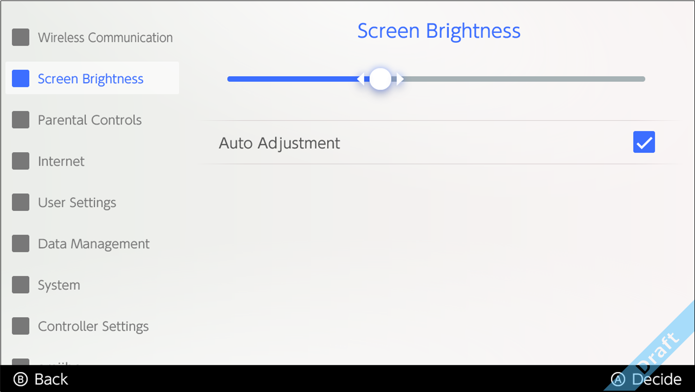

This feature encompasses a variety of system settings, such as Internet connection and parental controls.
System settings can be called when settings must be changed during application gameplay. We will provide an environment where the settings can be easily accessed as needed.
However, for items such as language settings and user settings, the suspended application or the system itself may need to be restarted after the settings are changed.

CONFIDENTIAL